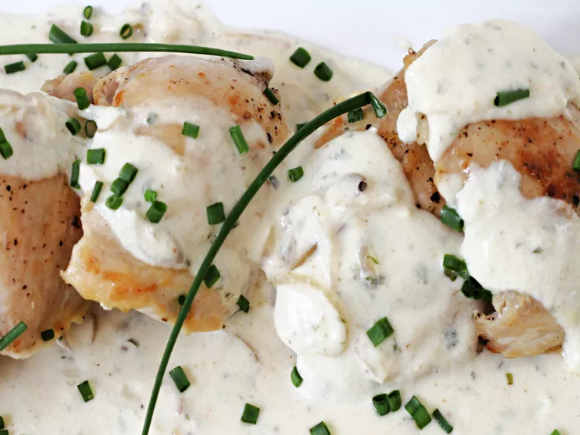

Boursin Chicken

This Boursin chicken dish is made with chicken thighs and a rich and creamy cheese sauce with shallots and chives. delicious way to dress up chicken and sure to impress guests!
Ingredients:
- 2 pounds boneless, skinless chicken thighs
- salt and freshly ground black pepper to taste
- 1 tablespoon unsalted butter
- 1 tablespoon olive oil
- ⅓ cup thinly sliced shallots
- 1 ½ cups heavy cream
- 1 (5.2 ounce) package shallot and chive cheese spread (such as Boursin)
- chopped fresh chives (Optional)
Steps:
- Pat chicken thighs dry with paper towels and season with salt and pepper.
- Heat butter and oil in a large nonstick skillet until butter is melted. Add seasoned chicken thighs and cook until nicely browned, about 5 minutes.
- Turn chicken and continue cooking about 2 minutes.
- Sprinkle sliced shallots over the chicken thighs, cover, and reduce heat to low. Continue cooking until an instant-read thermometer inserted into the center of the thighs reaches 165 degrees F (74 degrees C), 8 to 9 minutes more.
- Remove chicken to a plate or serving platter and keep warm.
- Stir cream into the pan drippings and add Boursin, breaking it into pieces. Increase heat to medium. Stir and cook until the cheese is melted and the sauce is bubbly, about 5 minutes.
- Pour sauce over cooked chicken thighs and garnish with snipped chives, if desired. Serve warm.